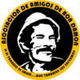

De: La Frikipedia, la enciclopedia extremadamente seria.
De: La Frikipedia, la enciclopedia extremadamente seria. De: La Frikipedia, la enciclopedia extremadamente seria.
| De la serie Sectas Locas: | |||||
| Asociación de Amigos de Ron Damón | |||||
| |||||
| Año de Fundación | Siglo XIII a.C | ||||
| Fundador | Don Ramón | ||||
| Actividad | Proteger los grandes secretos de la hermandad | ||||
| Lugar de Acción | Por todo el mundo | ||||
| | |||||
Asociación fundada por el gran líder espiritual Don Ramón hace miles de años, con propósitos diversos y sensuales misteriosos. Ilustres personas de todo el mundo (y de la Frikipedia) han reconocido abiertamente se miembros. No se necesita ser de una creencia religiosa específica para entrar, todas son aceptadas
La AARD (Asociacion de Amigos de Ron Damón) fue fundada por el mismo ser que la preside hoy en día, posiblemente en el siglo XIII a.C. Hasta hoy es desconocido el motivo por el cual fue creada esta "secta", pero se cree que fue hecha para conservar y cuidar todos los secretos de su líder, cómo las Cartas Ramónicas, y tambien se cree que poseen dentro de sus instalaciones el secreto para la vida eterna
La historia nos cuenta que Don Ramón estaba caminando por el bosque (no se sabe cual), y una extraña luz le llamó la atención. Al acercarse notó que un arbol estaba chorreando un extraño líquido morado con estrellas amarillas, y este líquido estaba brillando. Tomó valor y decidió tocar el líquido, he inmediatamente se sintió renovado, más joven, no lo aprentaba, pero asi se sentía. Agarró un balde del rio de baldes más cercano y lo llenó con la sustancia.
Cómo no poseía fondos ni para un pancito, recorrió las calles vendiendo El Líquido Rejuvenecedor de Don Ramón a un precio razonable y con bonos de descuento para la siguiente compra. Cómo el negocio marchaba tan bien, surgió un ser celoso, que quería robar la formula secreta para convertir la sustancia en un arma, este ser, llamado Planktonkaia (no tiene parentesco con el ser microscopico de Bob Toronja, de hecho Planktonkaia era un hibrido entre hombre y cerdo) fundó un grupo para robar la sustancia, la LCPK (Legión de Compinches de Planktonkaia).
Don Ramón se enteró de esto por medio de un pajarito (literalmente, lo cual lo asustó mucho), y reunió a los seres más capaces, mental y fisicamente, y les reveló el secreto de la vida eterna. Así pasaron a llamarse la AARD, y protegen este secreto además de muchos más luego obtenidos.
Siglos despues, cuando la hermandad había crecido, Don Ramón empezó a recopilar sus pensamientos y acciones del día a día en una especie de diario, llamado las Cartas Ramónicas. Las encontradas son sólo una parte de las 3 que conforman la Cartas que están divididas así (Sus títulos estan en Esperanto y todavía no se sabe cómo, ya que no existía en esa época, aunque se cree que este era el idioma oficial de la organización hace mucho):
La historia de la Hermandad sigue su curso a lo largo de los años, y, quien sabe cuantas reliquias y secretos tengan guardados.
Cómo toda organización, legión o partidillo de furbol, la Asociación tiene unos rangos, los cuales a su vez den privilegios a sus miembros, están, de mayor a menor de esta manera:
Significa Don, este era, es y será Don Ramón, hasta que escoga a un sucesor (o muera, pero esto no pasará). Este no debe presentarse a las reuniones si no quiere. Su única labor impartir conocimiento a los miembros que lo requieran. No debe vestir una indumentaria específica para las Eksterordinara Asembleo (Asamblea Extraordinaria), pero si debe ir vestido, cabe aclarar.
Significa Sombrero es el segundo al mando, este preside las reuniones de la Asociación y es el líder del Komitato (Comité). Debe usar un sombreo (de ahí su nombre) parecido al de Don Ramón, con el símbolo de la asociación en el costado.
Son los Secretarios que conforman el comité y junto al Ĉapelo y el Dono son el Alto Rango de la asociación. Hay 3 secretarios, el Milita (Secretario Bélico) que manda al ejército, y comanda las acciones de defensa y operaciones de rescate u obtención de reliquias. El Ekonomia o el Secretario de Economía, se encarga del manejo del dinero de la asociación. Y por último el Regionoj,o Secretario de Regiones, que administra los terrenos de la comunidad y coordina a los diferentes líderes comunitarios.
Significa Los Religiosos y Los Armados, son el Clero y el Ejército. Los Religiosos son aquellos curas, rabinos, o líderes religiosos (de cualquier religión) que dan los servicios de misas y sus equivalentes en otras religiones. Su vestimenta es igual a la que usarían afuera de la asociación.
Los Armados son los soldados que bajo el mando del Milita Sekertario, defienden la base de la asociación de ataques ya sean de la LCPK o de cualquier amenaza. Tambien se encargan de la localización y obtención de nueva reliquias para su seguro almacenamiento en la base.
Son los Líderes Comunitarios, osea los que coordinan las comunidades en los diferentes paises donde halla llegado la Ascociación, y a su vez son coordinados por el Regionoj Sekretario. Ellos deben dar cuenta de cualquier inconveniente y cada nuevo miembro a el secretario.
Significa Amigos del Don. Son las presonas comunes y corrientes que hacen parte de la Asociación. Deben usar una copia barata del sombrero que usa el Ĉapelo, además de un bluejean y una camisa negra.
Posee 3 diferentes rangos:
La AARD no es una secta religiosa, por lo que ninguna de sus ceremonias son de ese carácter. Todas las ceremonias, sin excepción, empiezan con el saludo de la Asociación, el cual es dicho primero por el que preside la ceremonia, y luego repetido por el público al unísono, este es Min portas la chanfle (Me lleva el chanfle). Algunas de estas ceremonias son:
Es la ceremonia realizada con más frecuencia, una vez cada dos semanas. Es presidida por el Komunumaj Ĉefoj, y su propósito es variado depende de la situación, aveces es para dar la bienvenida a un nuevo Amigo, o para dar nuevas instrucciones mandadas desde la base o para realizar y organizar fiestas. A esta ceremonia pueden ir todos los rangos, incluso personas no pertenecientes a la asociación, para que conozcan de que se trata. Generalmente hay comida, música, sabor y pachanguita, pero moderada. Se realizan generalmente los Jueves o Viernes, por la tarde noche, en el edificio d ela asociación que halla en la comunidad.
Se realiza una vez cada 3 meses. Consiste en una fiesta de 5 días, a la que pueden ir los Amikoj que lleven mas de un año en la Asociación. A la fiesta se puede asistir cualquier día, pero los que están los 5 días sin parar son recompensados con un ascenso al 3er nivel de Amikoj, cómo compensación por la perdida del empleo (por que si crees que sacar una semana laboral cada trimestre para ir de fiesta no es motivo de despido, eres todo un héroe). Los cinco días de fiesta tienen motivos difrentes cada uno, y las iniciales de cada día juntas deletrean R.A.M.O.N.
Esta es una reunión más personalizada. Cualquier miembro la puede solicitar en el edificio de la asociación a su jefe de comuna. Las personas que solicitan esta reunión es porque necesitan un consejo, y acuden al Dono para pregntarle. Como Don Ramón no puede estar en todos lados, los jefes de comuna practican una vieja tradición misteriosa enseñada sólo a las personas de este rango. Consiste en "invocar" a Don Ramón, para que este resuelva con su sabiduría los problemas de los demás. Esta práctica no tiene preligro de radiación pero si grandes posibilidades de salir por la puerta.
Esta es la mas grande reunión de toda la asociación. Tiene lugar en la base central, que no se sabe donde esta localizada, pero tiene espacio para los mas de 65 millones de amigos de Don Ramón. A todos los miembros se les manda un boleto para ingresar a uno de los cientos de aviones privados, los cuales (se cree) que llevan a La Insulo, la isla secreta de la asociación donde esta la base. Esta reunión sólo tiene lugar cuando algo fuera de lo normal ocurre, cómo cuando presentan una nueva reliquia obtenida o cuando va a haber una nueva celebración o un cambio en las reglas. Es la única precedida por el Dono, que es demasiado perezoso perezoso para ir a las demás
Los actos son actos, (aunque suene descabellado) que sirven para el ascenso de un rango a otro, o para la acumulación de estos y asi avanzar a otro nivel en la organización, como de Amikoj a Komunumaj Ĉefoj. Estos actos deben tener pruebas físicas que comprueban que han sido realizados. Hay diferentes tipos y dificultades de actos, algunos dan más reconocimiento que otros, y valen el doble y hasta el triple que los regulares, algunos de estos actos son:
Hay otras cosas además de las mencionadas anteriormente que hacen de la Asociación lo que es hoy en día, cómo el idioma, los enemigos, entre otros.
La Legión de Compinches de Planktonkaia es el enmigo más cercano de la Asociación (además de Walter Mercado y Chef, de South Park). Esta asociación sigue intentando robar el arbol mágico que da vida eterna, por lo que se le advierte a todo miembro de la AARD tener mucho cuidado, ya que si se encuentran en la calle con uno de ellos, hay muchas posibilidades de una batalla de proporciones fílmicas (ya sabes, cómo en las películas). Los miembros de la LCPK no pueden ser reconocidos ya que en público andan de incógnito, por lo que se recomienda total cuidado, aunque ellos no los intentarán matar, por ahora.
Su líder Planktonkaia aún dirige la Legión, ya que obtuvo una muestra del líquido de formas desconocidas. Es extremadamente peligroso y cochino, lo que lo hace doblemente mortal.
El Idioma oficial de la Asociación es el Esperanto. Se cree que este dialecto lo inventó el mismo Don Ramón para que sus enemigos no entendieran de que rayos estaba hablando, pero tenía un problema, tampoco con los que estaba hablando le entendían. Así que se decidió a enseñar el dialecto a sus amigos y vecinos con la Escuelita de Don Ramón localizada hace miles de años en La Vecindad.
Hoy por hoy todos los títulos antiguos siguen con ese idioma, pero ya no es una exigencia de la Asociación que todos sus miembros lo sepan hablar, sólo lo deben hablar los de Alto Rango, los demás, sólo con saber el significado de los títulos, actos, rangos y demás les basta.
Actualmente la Asociación tiene presencia en todos los cinco continentes, pero no en todos los países. Por América esta en cinco ciudades de EEUU, en Canadá, Groenlandia, México, Chile, Perú, Colombia y Argentina. en Europa esta en España, Espiña, Imperio Motrileño del Sur, Alemania, Italia, Sealand y la Isla del Mal.
En Asia se encuentra en un país secreto subterraneo que abarca todo el contiente y al cual sólo se puede acceder enviando Fax con el dibujo de una vaca que esta comiendo pasto, a la cual se le acabó el pasto y se fué. En Africa está en Sur Africa, de hecho uno de los estadios para la Copa del Mundo del 2010 es la base, y tambien en Egipto y el Congo. En Oceanía esta en Nueva Zelanda y Australia. en la Antártida está en la Antártica
Por último hay una en la Atlántida, en la isla secreta donde está la base madre, en la luna, en Omicrón-Persei 8 y en la casa de Bill Gates.
Hay varios ilustres miembros de la Asociación en la Frikipedia. Estos incautamente han reconocido serlo y está en peligro de de ser encontrados por la LCPK. Si tú nombre está aqui preparate para la batalla contra ellos:
| Kalvera | Megasoft | COSIO | Naruto hyuga | Alex el Mono | Hajipunk14 | Wei1 | Bryan | Musashi006 |
| Mexicanspartan117 | Ryogamaru | Moises 92 | Kevrochi | D-pepeX | Icies | Andrios | Ecchi-sensei | Sdrf92 |
| Nezz | EKE | 62666 | Geruv | Kampoz | Andrestaker | LobitoBimbo | Jorge and Miki | XxNiikoxX |
Estas son las escarapelas, identidificaciones, jirafas, como quieran llamarles, que les identifican cómo miembro de la asociación, la de Novulo se puede adquirir sola, pero las demás deben se entragadas por el Jefe de Comuna.
|  | Este usuario pertenece a la Asociación de Amigos de Ron Damón |

|
Este usuario es un Jara de la AARD |
|
| Este usuario es un Duobla de la AARD, así que haz lo que te diga | 
|
Autor(es):